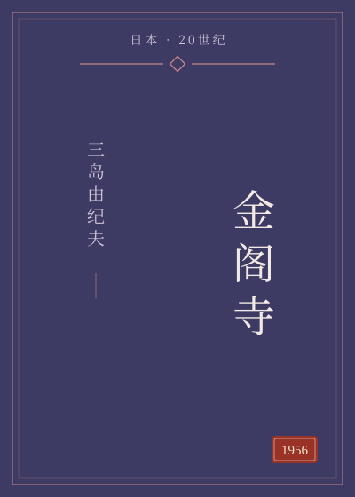

金阁寺
一、基本信息
| 作者 | 三岛由纪夫 |
|---|---|
| 成书/出版 | 1956年出版（Britannica） Yukio Mishima — Encyclopaedia Britannica（百科全书） |
| 国别/地区 | 日本 |
| 时代 | 现当代 · 20世纪 |
| 体裁 | 长篇小说（心理小说） |
| 语言 | 日语 |

《金阁寺》'美与毁灭'结构图（主题·结构图）
二、创作背景
取材真实事件：1950年7月1日，鹿苑寺（金阁）见习僧林承贤纵火烧毁金阁（国宝）——三岛以此案为底本（通说待核：纵火僧自述'我对美嫉恨'）。
历史背景：金阁（足利义满1397年建）在战争中奇迹般未毁、又在战后美军占领的阴影下'成为废墟般的物'——'美在战后日本的处境'（通说解读）。
哲学谱系：柏木的'虚无'论、内观与禅、《古镜记》式的美论——三岛美学（《太阳与铁》《叶隐入门》）的巅峰实践（通说待核）。
三、内容脉络
口吃的美少年沟口——由于父亲的教导自幼把金阁当作'世上最美的东西'；父亲病危带他初见金阁：'美就是这样子吗？'——想象与实物的落差（原文意，待核）。
鹿苑寺岁月：住持收他为弟子；在大学结识'用脚说话'的柏木（假性内翻足的诡辩者——'不义的哲学'通说待核）与有为子（告发美军的少女——通说细节）。
美的动摇：'战争'（空袭预感）使金阁'与我有同命'的可能——美在毁灭的边缘才亲近；战后金阁重新'永恒化'，重新疏远他；住持的堕落（艺伎）令其幻灭；'我'与女人的失败、与柏木的对峙——'我要烧掉金阁'的决定（原文意，待核）。
纵火之夜：雨夜潜入，刺杀小僧失败，将火与汽油泼向金阁——'我要活下去'的顿悟（通说：他原想同死却决定活着——原文意，待核）——在山顶看金阁燃烧、抽完一支烟：'烟抽起来真香'（结尾原文意，待核）。
四、主要人物表
| 人物 | 身份 | 说明 |
|---|---|---|
| 沟口 | 口吃的见习僧 | 语言残障者与'美'的对立——以毁灭回应'美与人生的隔离'（通说解读） |
| 柏木 | 内翻足大学生 | '认识论的诡辩者'：'不义的哲学'——诱引女人与虚无（通说） |
| 有为子 | 告密的少女 | '告发恋人的牺牲'——美的背叛性（通说） |
| 住持 | 鹿苑寺住持 | '菊与艺伎'的两面——权威的堕落（通说） |
| 鹤川 | 同门挚友 | '唯一的光'——早亡（通说） |
五、主题与艺术特点
- 美与人生永恒的隔阂：金阁'总是在我看不见的地方'——美不在此岸（通说）。
- 毁灭作为占有：'我把美的东西烧掉'——以毁灭使其永远属于自己（通说解读）。
- 口吃与语言：'语言的道'（door of words）在他面前关闭——三岛最深的自传性主题之一（通说待核）。
- 战争与美的政治学：占领、废墟、'永恒'的时空（通说）。
- 艺术特点：三段式（童年—寺内—纵火）、哲人对话（柏木论）、火与雪的意象对照（通说待核）。
六、影响与评论
- Britannica（Mishima 条目）：The Temple of the Golden Pavilion (1956) 列为其 major works——与《假面的告白》《潮骚》《丰饶之海》并置。
Yukio Mishima — Encyclopaedia Britannica（百科全书） - 1950纵火真实事件的文学转化——'犯罪文学与美学小说的合体'（通说待核）。
Yukio Mishima — Encyclopaedia Britannica（百科全书） - 跨媒介：市川昆电影《炎》（1958，通说待核）与歌剧（梅 occurred）等。
Yukio Mishima — Encyclopaedia Britannica（百科全书） - 中国影响：三岛在中国的'美学热'与争议（通说待核）。
Yukio Mishima — Encyclopaedia Britannica（百科全书）
七、阅读建议
难点
- 1950年真实纵火案的前置知识（鹿苑寺/林承贤）帮助理解'底本'。
- 柏木的哲学独白（'不义的哲学'）是全书思辨核心。
- 三岛的文体（汉字熟语连缀的文言腔）——选好译本。
- 唐月梅译《金阁寺》（上海译文出版社/作家出版社，通说待核）：通行本。
- 陈德文译本（人民文学出版社，通说待核）：另一选择。
- 英译：Ivan Morris（1959，通说待核）。
通读十章 → 精读柏木'不义'论与纵火之夜 → 对照真实事件报道（1950）→ 读《叶隐入门》看三岛美学。
八、待核实
- 1956年新潮社出版细节与真实案件材料（林承贤自述）待核。
- 唐月梅/陈德文译本出版信息待核。
- 1959 Ivan Morris 英译确认待核。
- 市川昆电影《炎》（Enraku？Enkō——1958）细节待核。
本页主要来源
三岛由纪夫的其他收录作品：金阁寺